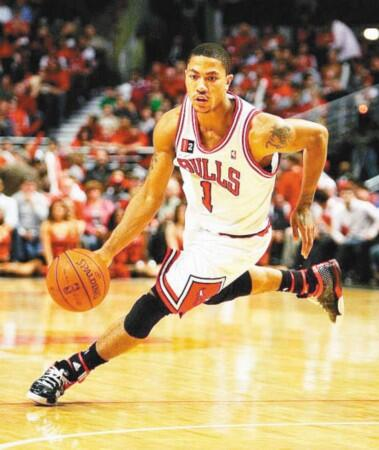
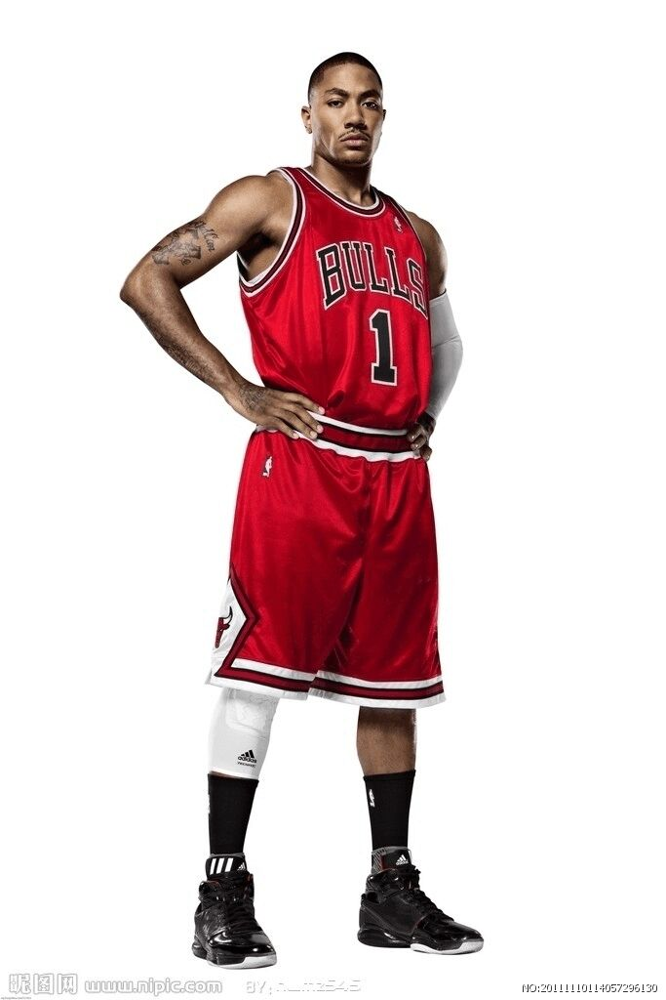
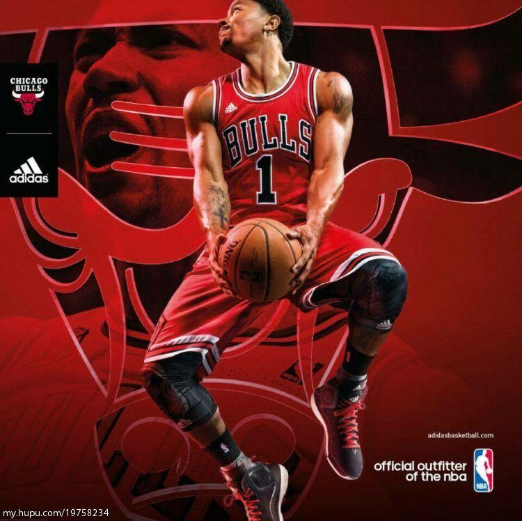
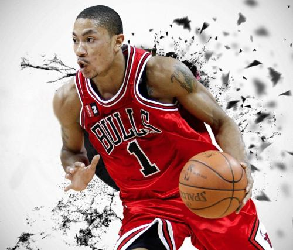
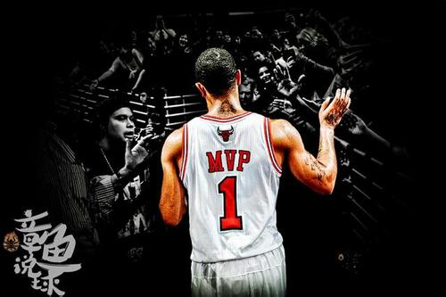

德里克·罗斯（Derrick Rose），1988年10月4日出生于出生于美国伊利诺伊州芝加哥（Chicago, Illinois），美国职业篮球运动员，司职控球后卫，效力于NBA纽约尼克斯队。德里克·罗斯在2008年NBA选秀中以首轮第1顺位被芝加哥公牛队选中。新秀赛季获选NBA年度最佳新秀并获得NBA全明星技巧挑战赛冠军。2009-10赛季入选NBA全明星赛。2010-11赛季，22岁的罗斯当选为NBA常规赛最有价值球员（MVP），成为NBA历史上最年轻的MVP，同时入选NBA最佳阵容第一阵容和NBA全明星赛首发阵容。2011-12赛季再度入选NBA全明星赛首发阵容。2011年，NBA新劳资协议中增加“罗斯条款”，以使符合条件的优秀年轻球员能够更早地获得占据球队工资帽30%的顶薪合同。[1]2017年7月25日，自由球员德里克-罗斯和骑士队已经达成了一份1年210万美元的合同，加盟骑士队。
下面为大家呈现一些他的图片和视频
    因为时间问题只能给大家看这些图片,下面是视频播放
这个广告不是我的本意但是它就这样突然出现了我也没法